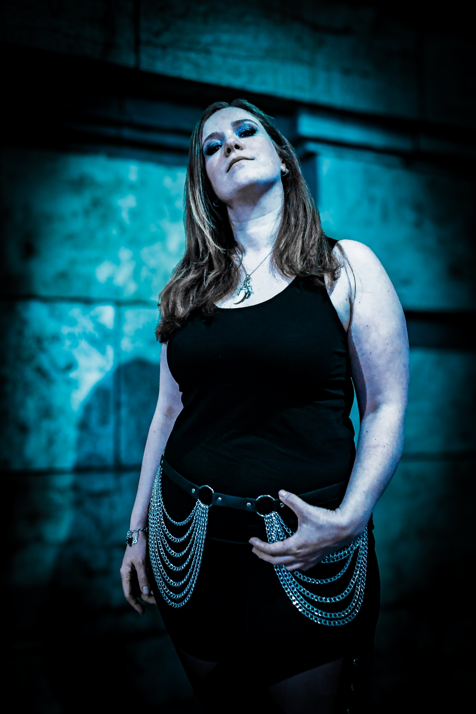
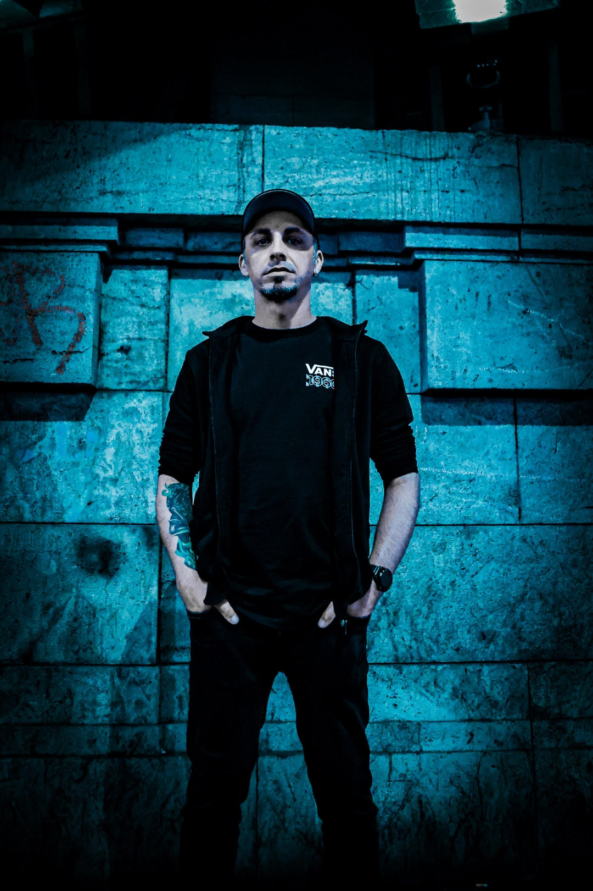

The Band

Asura Falls stehen für energiegeladenen Modern Metalcore mit klarer Botschaft, massiven Riffs und zwei unverwechselbaren Stimmen. Die sechsköpfige Band vereint melodische Tiefe, emotionale Intensität und kompromisslose Härte zu einem einzigartigen Sound, der unter die Haut geht. Mit Einflüssen von Bullet For My Valentine, Killswitch Engage und In Flames schaffen Asura Falls eine kraftvolle Mischung aus eingängigen Melodien, aggressiven Breakdowns und atmosphärischen Momenten. Dabei treffen cleaner Gesang und markante Shouts / Growls auf moderne Gitarrenwände und treibende Drums – ein Sound, der live ebenso überzeugt wie im Studio. Seit der Neuformierung mit Jenny und Nemo an den Vocals hat die Band eine frische Dynamik gewonnen. Gemeinsam mit Jonas (8-String Gitarre), Cons (7-String Lead Gitarre), Sueri (Bass) und Erausmus (Drums) entsteht ein kraftvolles Gesamtbild, das Herz, Härte und Haltung vereint. Ob auf großen Bühnen oder in Clubshows – Asura Falls stehen für Authentizität, Leidenschaft und eine mitreißende Live-Energie. So verwandelt die Band kleine Clubs und große Bühnen in ein Meer aus Bewegung, Emotion und purer Energie – ein Beweis dafür, dass Metalcore weit mehr sein kann als nur Lautstärke. Mit neuen Songs und kommenden Shows ist Asura Falls bereit für den nächsten Schritt – kompromisslos, ehrlich und mit dem klaren Ziel, ihre Musik in die Welt zu tragen.

Jenny - Vocals
Schon als kleines Kind stand Jenny gerne auf der Bühne – ganz egal wo sie war. Wenn ihr ein Lied gefiel, sang sie mit und tanzte dazu. In ihrer Jugend ließen sich ihre musikalischen Vorbilder in Bands wie Linkin Park, Green Day und Bullet for My Valentine finden. Heute zählen unter anderem Maria Brink von In This Moment und Jennifer Haben von Beyond the Black zu ihren Inspirationen. Mit ihrer mitreißenden Bühnenpräsenz und einer überzeugenden Stimme, die von sanft und einfühlsam bis kraftvoll und aggressiv reicht, bringt sie eine enorme Dynamik in die Band.

Nemo - Vocals
Nemo entdeckte schon früh seine Liebe zur Musik und ist heute – viele Jahre später – der Frontmann von Asura Falls. Mit seiner langjährigen Erfahrung als Shouter, Rapper und Texter verleiht er der Band die nötige Härte. Durch seinen unverwechselbaren Stil und seine markante Stimme treibt er den Sound kompromisslos nach vorn.

Jonas - 8-String
Inspiriert von seinem Musiklehrer begann Jonas seine musikalische Laufbahn zwar relativ spät, dafür aber umso entschlossener. Seine Reise – und damit die Suche nach seinem eigenen Sound – begann mit Einflüssen von Bands wie In Flames, Caliban und Insomnium. Bewaffnet mit acht Saiten und seinem Songwriting legt Jonas ein Fundament aus Schwere und Melancholie, auf dem die Band ihre Songs aufbaut. Auch wenn er selten im Vordergrund steht, ist er als Rhythmusgitarrist und „hauseigener Technik-Guy“ unersetzlich und trägt maßgeblich zum Sound der Band bei.

Cons - 7-String
Seit der ersten Stunde ist Cons Gründungsmitglied, Leadgitarrist und damit der „Veteran“ unserer Band. Er spielt Gitarre, seit er acht Jahre alt ist, und seine Einflüsse aus klassischem Blues und Metal prägen maßgeblich den typischen Asura-Sound. Inspiriert von modernen Core-Bands verwandelt er Ideen in melodische Riffs und ergänzt sie mit atmosphärischen Synth-Sounds.

Sueri - Bass
Sueri entdeckte seine Leidenschaft für tiefe Töne im Alter von 14 Jahren – seine Wurzeln liegen im Skatepunk der frühen 2000er. Nach einer längeren Pause ist er seit 2016 ein fester Bestandteil von Asura Falls und sorgt als geschätzter Bassist der Band für das unverzichtbare Fundament, das unsere Musik spürbar macht.

Erasmus - Drums
Auch wenn er mehrere Instrumente beherrscht, liegt seine wahre Leidenschaft im Schlagzeug. Beeinflusst von einer Vielzahl an Stilrichtungen – von Videospiel-Soundtracks bis hin zu Progressive Metal – verbindet sein Spiel wuchtige Beats mit verspielten Fills und erschafft so eine unverwechselbare Energie und Dynamik.
Upcoming Shows

31.01.2026
Location:DAS RIND, Mainstrasse 11, 65428 Rüsselsheim am Main
Other Bands:4 Numb, Spillflower, Vüxin-Music, Ylva
Info
28.02.2026
Location:Autonomes Zentrum, Metzgerstrasse 8, 63450 Hanau
Other Bands:Spillflower, Captivated
InfoSpotify
To protect your privacy, the Spotify player is only loaded after you accept cookies and external services.
Press
Contact
If you want to reach out to us, feel free to send an email to info@asurafalls.de.
If you need a Press Kit oder the Stage/Tech-Rider, please klick HERE.